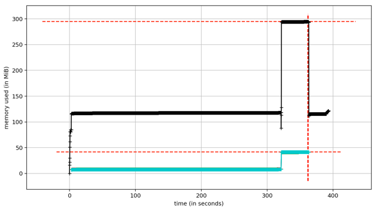

Benchmarking and Hardware Requirements¶
Use of an HPC or powerful workstation is not necessary, although could speed things up. Testing was performed on a 2014 iMac with a 4-core Intel i7 processor and 32GB of memory, although only a small fraction of this memory was needed.
Runtime scaling¶
With a ddRAD dataset sequencing on HiSeq 2500 paired-end with 150bp reads, including 48 individuals and generating 51,931 alignments, the following command was run:
mrbait -L wtd_run1.loci -T 4 -c 12 -l 150 -b 60 -K 1.0 -d 200 -F snp=1,10 -s tile=30
A total of 46,219 alignments passed filtering, of which 44,808 included a conserved region long enough for target design. 27,102 targets passed filtering (which was performed based on number of flanking SNPs) and were used to design 43,342 baits. Total runtime across 4 threads was 392 seconds.
Parallel processing is implemented where practical, primarily in steps 1 and 2. For step 1 (alignment parsing), it splits alignment files into groups, to be parsed by each daughter process. During parsing, when an entry must be added to the SQLite database, this cannot be performed in parallel, so a database lock is implemented so that commits to the database are queued. However, the decrease in runtime due to parallelization far outweighs this:

Figure 3: Runtime scaling for Step 1 (most time-intensive step) with varying number of threads
The relationship of runtime to number of threads is similar for step 2 (target discovery), as is the general scheme of preventing database conflicts caused by concurrent database updates. These steps (1 and 2) are by far the most time consuming, although pairwise alignment or BLAST searching in steps 3 or 5 can take considerable time depending on dataset size.
Runtime (in seconds) and peak memory usage (total) for varying numbers of threads, with a ~50k loci RADseq dataset.:
| Threads | Step 1(s) | Step 2(s) | Step 3(s) | Step 4(s) | Step 5(s) | Total (s) | Peak mem (MB) | Step 1 mem (MB) |
| 1 | 1182 | 129 | 1 | 25 | 3 | 1342 | 120 | 80 |
| 2 | 591 | 69 | 1 | 25 | 3 | 690 | 260 | 100 |
| 3 | 399 | 49 | 1 | 25 | 3 | 478 | 275 | 110 |
| 4 | 320 | 41 | 1 | 25 | 3 | 392 | 300 | 125 |
Memory Usage¶
Large alignments are processed piecemeal, with only a single alignment loaded at a time, thus even large files can be processed without excessive memory requirements. The internal data structure of mrbait relies on a file-based database (SQLite), making it very efficient in terms of memory usage. Because of this, it should run on any normal (and reasonably modern) desktop computer. Peak memory usage tends to be during step 2 (target discovery), as at this step all consensus loci are scattered across threads- note that this also means a slight increase in peak memory requirements as number of threads increases. See Figure 4 for an example of how memory scales throughout the pipeline steps.
Figure 4: Memory usage throughout the pipeline (recorded for a 50k loci RADseq dataset). Total memory usage (black) shows a peak of ~300Mb during step 2. Per-thread memory usage (blue) cumulatively impacts total memory usage but drops to zero after step 2, as following steps do not utilize parallel computation